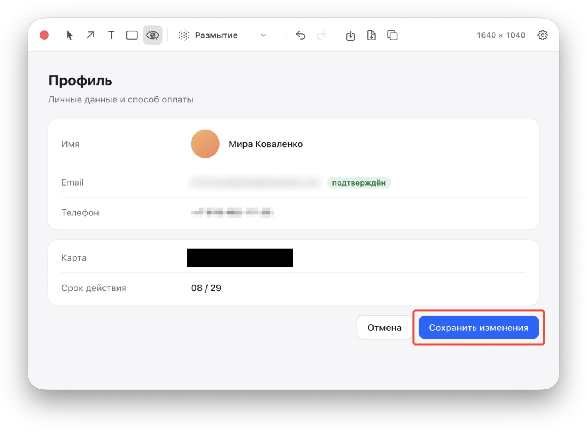
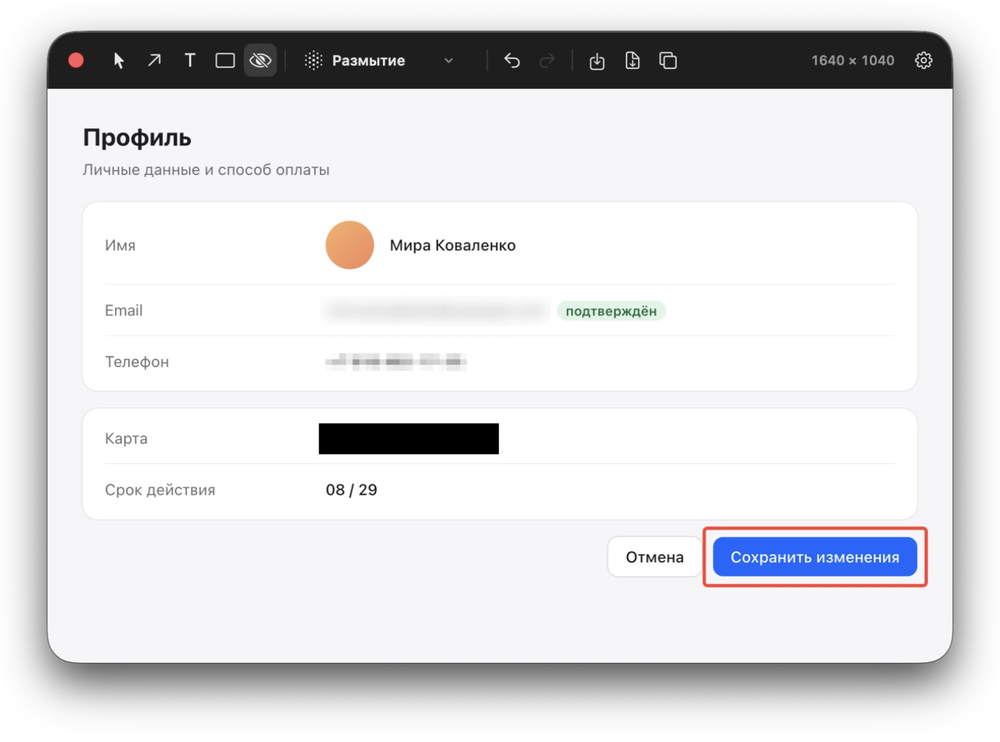

⌘5 Скрытие
Спрячьте личное перед отправкой
Почту, телефон и номер карты можно размыть, пикселизировать или закрасить. Скрытие ложится под стрелки и текст, поэтому пометки поверх него остаются видны.
РазмытиеПикселизацияЗамазка

